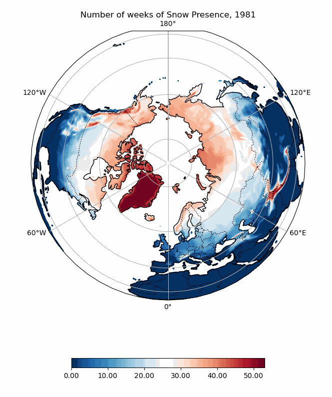
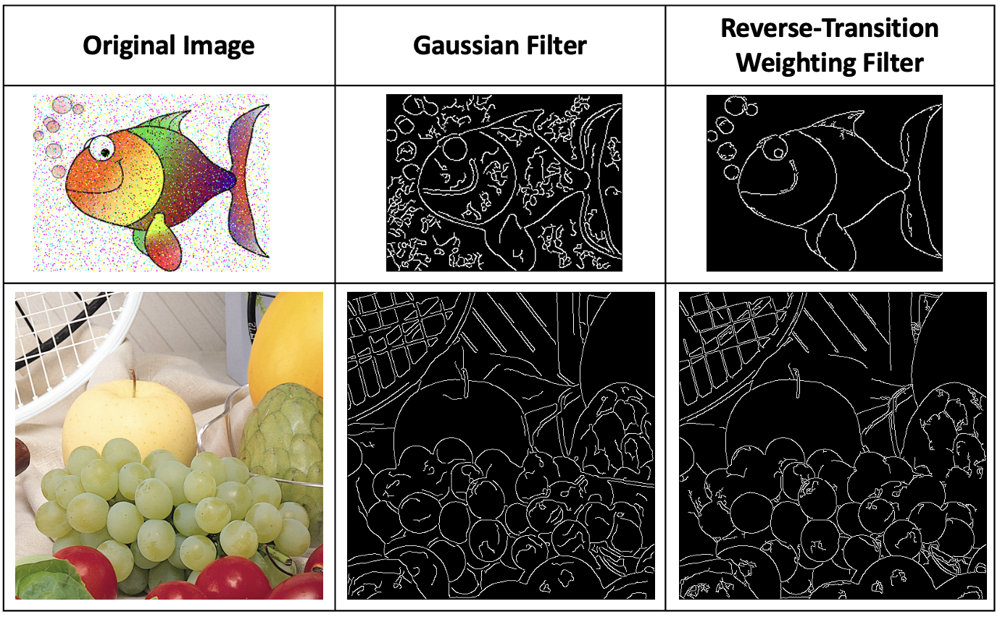
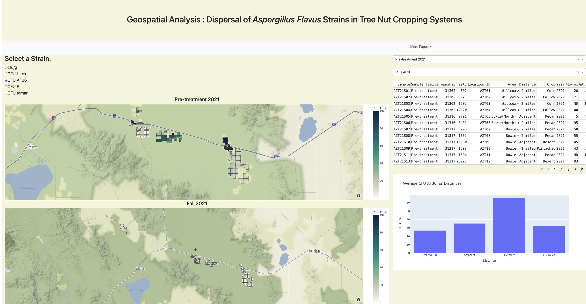

Work Profile
Data Science Undergraduate Researcher
Mississippi State University
Starkville, MS
01/24 - Present
Conducting statistical and programmatic investigative inquires through a wide range of projects
Projects range from conducting a trend analysis on Northern Hemispheric snow presence
to streamlining the MS Supreme Court Drug Intervention monthly data reporting process.
Marketing Assistant
Capstone Real Estate Investments
Starkville, MS
01/23 - 12/23
Resolving different varieties of issues that may arise with residents, from package delivery
to terms and compliance of their lease
Cross-coordinating with management and maintenance for the renovation process of the property
Aiding a range of clients find a space they call home
USDA Aflatoxin Research Internship
Mississippi State University
Starkville, MS
05/23 - 08/23
Thorough data analysis conducted from USDA cropping data, curated a fully accessible
dashboard presenting geospatial mapping with Python visualization packages.
Trend Analysis of Northern Hemispheric Snow Presence
Programming language : Python and R

Summary
Building on a previous trend analysis study of northern hemispheric snow presence, this project leverages
a higher resolution dataset while applying the original statistical methods.
The project involves manipulating and preprocessing a large dataset from a netCDF file to visualize and analyze changes in
snow cover from 1980 to 2023. The statistic methods from the original study will be applied to the new dataset once a preliminary
exploratory analysis is thoroughly completed.
Products and Resources
A preliminary visualization of the land points from the dataset:
Interactive Global Plot
Original study currently being adapted
- Statistical Methods; two-state Markov Chain model
- Large Data Management
- Time Series
Streamline Reporting Requirement for State Agency
Programming language : Visual Basic Application (VBA) and Python
Summary
Transforming the outdated Mississippi Supreme Court reporting process for the Drug, Mental Health, and Juvenile Intervention courts from manual labor
intensive transferring of data to a simplistic push of a button process. The entirety of the process originally demanded manual transferring
of data through five different Excel workbooks. After the completed rework of the VBA Macros, the user was able to
utilize a set-up page to enter the number of courts and reporting year. Then, press a button and watch as the data is dynamically
transferred through the five workbooks, resulting in a ready-to-print dashboard for each reporting statistic.
A second part to this project will involve the creation of a revised thorough Python dashboard bundled in an executable that will
increase the longevity and usability of the reporting process for informed decision making and optimized operations within the Intervention court programs.
This project supports the Mississippi Supreme Court five year strategic intervention court reporting process.
- Client Relations
- Financial State Agency Reporting Dashboards
- Project Management
The Reverse-Transition Weighting Filter for Edge Detection for Noisy Color Images
Programming language : Matlab

Summary
As part of an edge detection project for an Introduction to Modern Scientific Computing course, I developed an edge detection algorithm without relying
on any built-in packages. Through the application of advanced mathematical matrix operations, the Gaussian Edge Detection method was significantly enhanced.
Due to the challenges posed by noisy and color images, the first two steps of the Canny algorithm (noise removal and gradient calculation) were modified to
incorporate our Reverse-Transition Weighting Filter and a Structure Tensor Method.
This work culminated in a publication and a conference presentation at the American Council on Science & Education. The project will also be featured in the book series
"Intelligent Computing," under the title "Imaging Science: Computer Vision, Image and Signal Processing, Pattern Recognition" (ISBN: 978-3-11-143638-8).
Products
S. T. Richey et al., "The Reverse-Transition Weighting Filter for Effective Edge Detection for Noisy Color Images," 2023 International Conference on Computational Science and Computational Intelligence (CSCI),
Las Vegas, NV, USA, 2023, pp. 1160-1166, doi: 10.1109/CSCI62032.2023.00190.
PDF
- Logical Mathematical Computing Aspects
- Enhancing Traditional Methods
- Correcting Mathematical Issues in Scientific Computing
Text Extraction from Images, PDF Files, and Speech Data
Programming language : Python
Summary
Widely adapted PDF interpreters lack the ability to properly and cohesively transform PDF files containing images with overlayed text to a plain text file. In this project
a PDF file interpreter was created with the goal to enhance OCR methods to appropriately work line by line through a PDF file contain images. In a second part of this project,
a speech to text file interpreter was created. Additional information to the methods used with limitations is included in the project write-up below.
Products
Write-up detailing the methods and limitations:
PDF
Source code accessible through GitHub link in header.
- Logical Computing of real-world problems
- Computational Algorithms
Top 2000 Spotify Songs: Visualization and Analysis
Programming language : Tableau, Python for pre-processing
Summary
As a result of the final presentation for a Data Visualization course, my team and I utilized an open-source Spotify dataset from Kaggle to create
an interactive Tableau dashboard. This Tableau dashboard required pre-processing mathematical computations and cleaning of the dataset through Python.
Products and Resources
Final visualization and analysis write-up including methods and mathematical operations:
PDF
View the visualization:
Tableau Public Dashboard
- Cohesive Visualization Dashboards
- Data Manipulation
- Dataset Cleaning
Geospatial Analysis: Dispersal of Aspergillus Flavus AF36 Strain in Tree Nut Cropping Systems
Programming language : Python

Summary
In my first internship, I was tasked with creating a geospatial analysis of the aflatoxin levels and associated treatments in local Arizona crops for the USDA. The resulting
choropleth maps and exploratory analysis plots were formulated into interactive features with the Dash python package, refined through .html scripts and deployed with Render.com.
At the conclusion of my internship, I entered the Mississippi Academy of Sciences Summer Science and Engineering Symposium. I was a reciptant of the Honor Mention in the poster
presentation section.
- Cohesive Visualization Dashboards
- Exploratory Data Analysis
- Dataset Cleaning